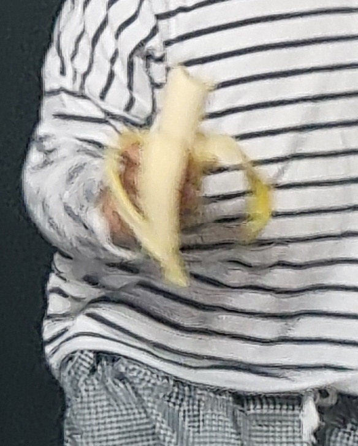
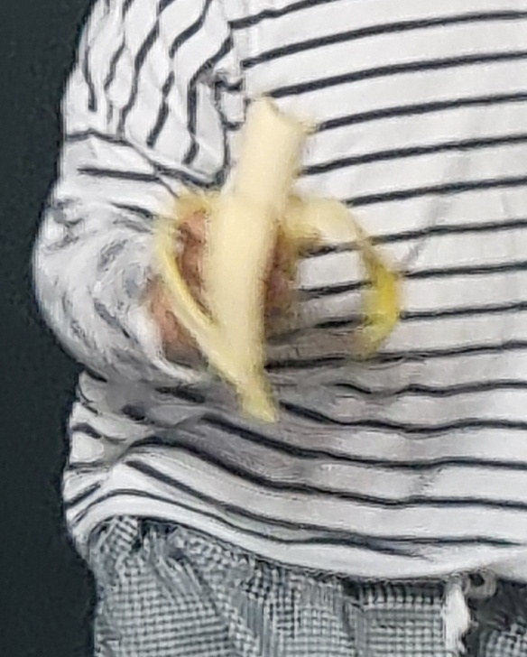

바나나 농사는 다 자란 바나나의 땅속 줄기에서 새순을 베어내는 데서 시작된다. 새순을 땅에 심고 3-4주가 지나면 똘똘 감긴 잎이 싹터 나오는데, 잎은 자라면서 펼쳐져 길이 4m, 폭 1m의 크고 번들거리는 넓은 타원형 잎몸을 이룬다. '헛줄기'로 불리는 바나나의 줄기는 단단하게 감긴 잎몸과 잎자루로 이루어져 있다. 바나나는 약 10개월 정도 자라면 굵은 땅속줄기의 끝부분에서 커다란 눈이 생겨 잎의 다발 위까지 자라 나온다. 눈에는 포(苞)라고 하는 작은 자주색 잎이 많이 달려 있다. 포가 달린 줄기가 식물체의 꼭대기까지 자라면 포가 말리면서 작은 꽃차례가 나타나며, 이 꽃들은 수정되어 녹색을 띠는 작은 바나나를 맺는다. 바나나 송이는 대개 바나나 10-20개로 이루어지는데, 한 식물체에 대략 다섯 송이가 열린다. 바나나가 커지면 줄기는 아래로 축 처지고 바나나는 위쪽으로 구부러지기 시작한다. 열매는 5-6개월 후에 익으며, 다 익으면 땅에 떨어진다. 익은 바나나는 바로 먹지 않으면 상하기 때문에 수출용 바나나는 완전히 익지 않아서 녹색일 때 수확한다. 종에 따라서는 익기 전까지 독을 지닌 것도 있다.
 
